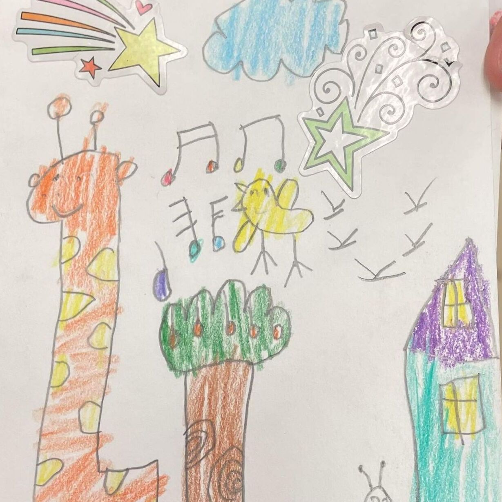
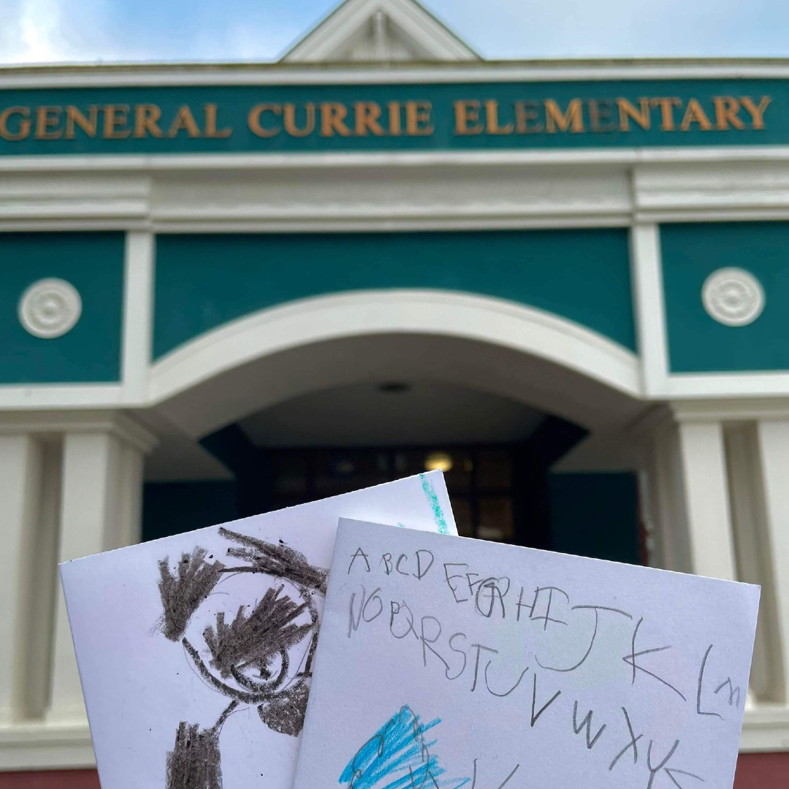
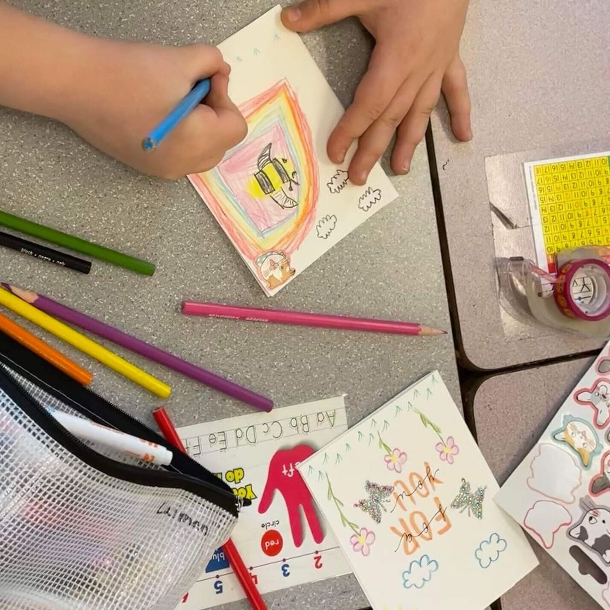
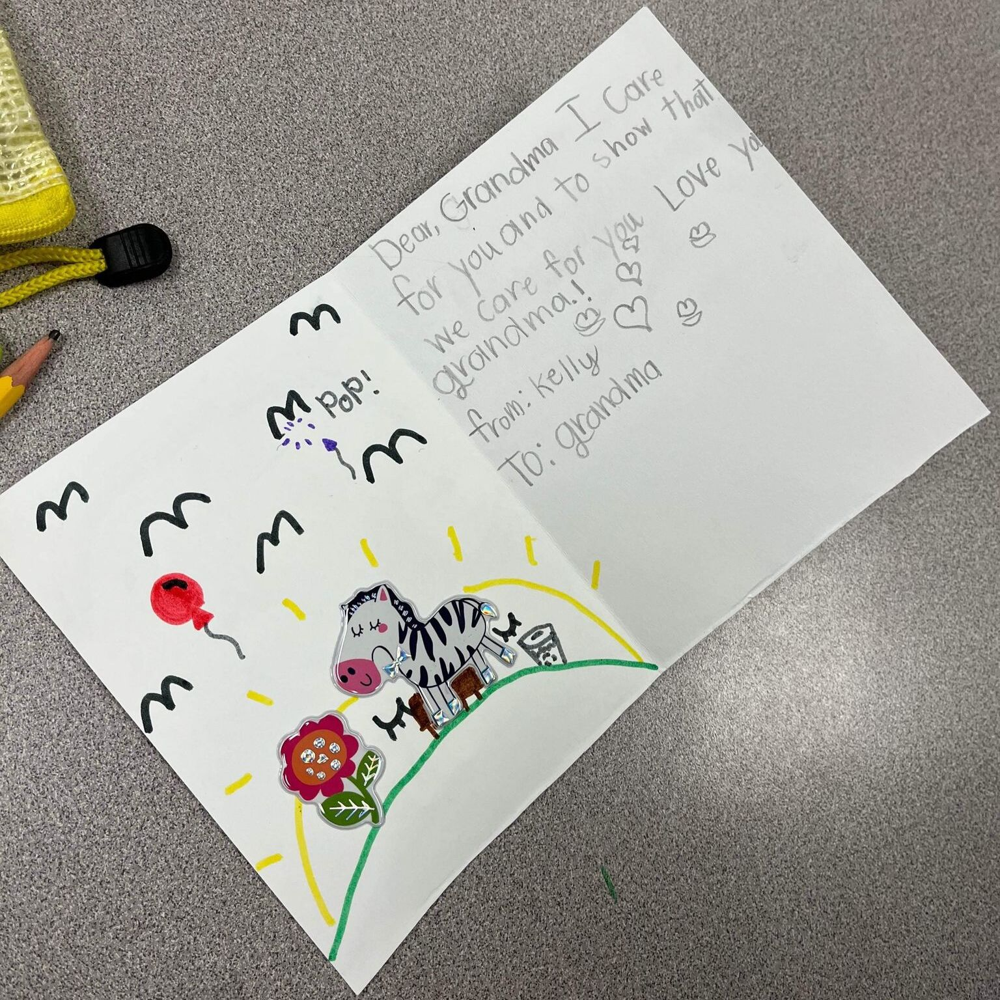

December 2022 to March 2023 - General Currie Elemtary School Session
The Morning Mission is proud to announce that we have officially partenered up with General Currie Elemtary for the remainder of the 2022-2023 school year! The kindergarten students were thrilled to excercise their creativity and writing skills when making cards for seniors. In the span of an hour, the kindergarteners created beautiful cards dedicated to seniors. Some even thought of their own messages to include on the inside! The Morning Mission had the pleasure of making bi-weekly visits to one of our local schools, General Currie Elementary. We taught classes ranging from Kindergarten to grade 4 more about building stronger connections with seniors in their lives through engaging class discussions and creative card-making.
|  |  |
|  |  |
Go back
e